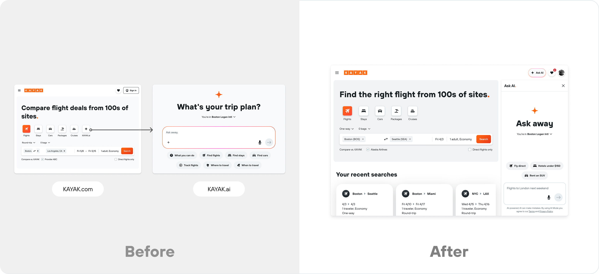
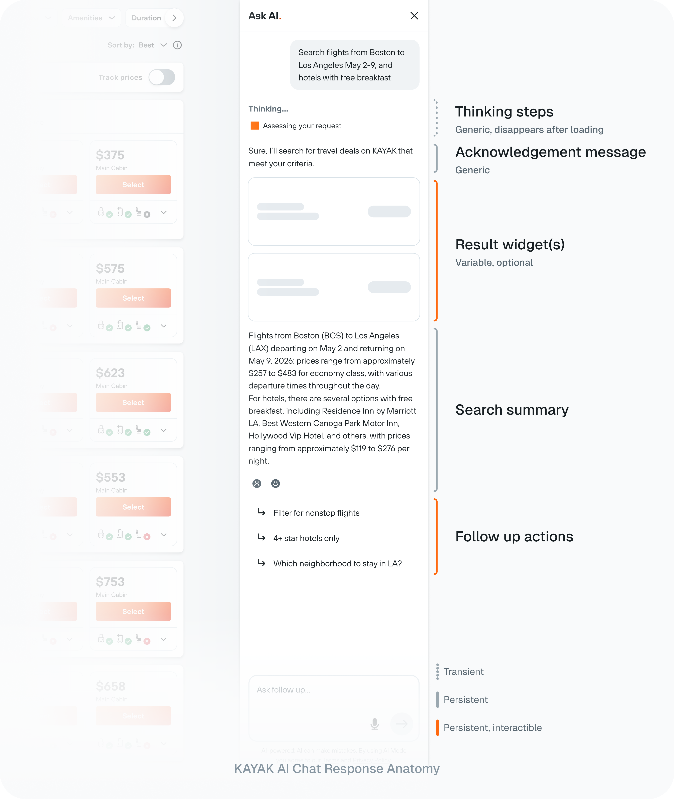

KAYAK · 2024 · Embedded conversational search
KAYAK AI Chat
KAYAK's standalone AI had strong capabilities but near-zero retention. I helped move it into an embedded conversational experience on KAYAK.com, then designed for the hardest part: keeping non-deterministic output coherent.
- Role
- Senior Product Designer, AI (lead designer)
- Team
- Product, engineering, user research
- Timeline
- 2024
- Scope
- Embedded chat, response system, intent logic

Why it mattered
The problem
A capable AI that no one came back to
KAYAK.ai launched as a separate product. Despite heavy investment, it drew little organic traffic and almost no return visits. But referral data told a different story: the few users who reached core KAYAK after using the AI converted at 5x other channels. The technology was not the problem. Asking users to go somewhere new for it was.
The bet
De-risk before the rebuild
Rather than a costly persistent-chat build, I helped scope a cheap test first: natural-language input embedded directly in the existing search flow. One new input, same results page, clean data. It returned +14% booking revenue and neutral impact on core metrics, enough signal to justify the full chat platform that followed.

The core craft
Making open-ended output coherent
Multi-turn chat made output non-deterministic: a single prompt could return a list, a comparison, a clarifying question, or a multi-vertical plan. Instead of designing one layout, I defined a response structure any answer could pour into, and shifted intent handling from a brittle fixed-scenario classifier to an intent inference model that clarifies before answering.
How I worked
-
Prototyped the behavior, not just screens
Translated a jobs-to-be-done flow into a runnable custom GPT so engineering and PM could test real prompts and agree on system behavior before any mocks.
-
Validated with users
Tested widget patterns with 9 users on usertesting.com; the findings, not the scorecard, set the direction toward chat-as-wayfinder.
-
Designed for graceful failure
One clarifying step over a dead-end answer; proactive follow-ups over text recaps that 7 of 9 users called noise.
-
Built to scale across verticals
A predictable one widget, one page, one state mapping so the system expands to new verticals without fragmenting.
Strategic considerations
The trade-offs that shaped the work
-
Test cheaply before committing capital
A full persistent-chat platform was the obvious build. I pushed to validate demand first with a low-cost embedded input in the existing flow, turning a large bet into a measured one (+14% booking revenue) before engineering committed.
-
A fixed response anatomy over bespoke layouts
Designing a unique layout per answer would not scale and would tie cost to every turn. One response structure kept output coherent and held API cost flat as conversations grew.
-
What I didn't build
I dropped text recaps that 7 of 9 users called noise, and held multi-vertical complexity until the one-widget, one-page, one-state model proved itself. Scope discipline kept v1 shippable.
Collaboration & ownership
Owning behavior, not just screens
- Product
- Engineering
- User research
The highest-leverage work here lived upstream of the UI: the behavioral specs, intent logic, and research that engineering and PM aligned on before mocks existed. I owned the experience from de-risking the test scope through the shipped drawer and its measured impact.
De-risk
Scoped a cheap embedded natural-language test instead of a full rebuild, at +14% booking revenue with neutral impact on core metrics.
Define
Set the response anatomy and moved intent handling to an inference model that clarifies before answering.
Validate
Tested widget patterns with 9 users; the findings, not the scorecard, steered chat toward a wayfinding layer.
Ship & measure
Launched Chat v1 site-wide, lifting engagement +123% over the prior NLP search with about 80% more messages per user.
Outcome
An embedded AI people actually use
After launching the Chat v1 drawer site-wide, engagement rose +123% over the earlier NLP search, with about 80% more messages per user. The most valuable work was not the UI; it was the behavioral specs, intent logic, and research that made the UI possible.